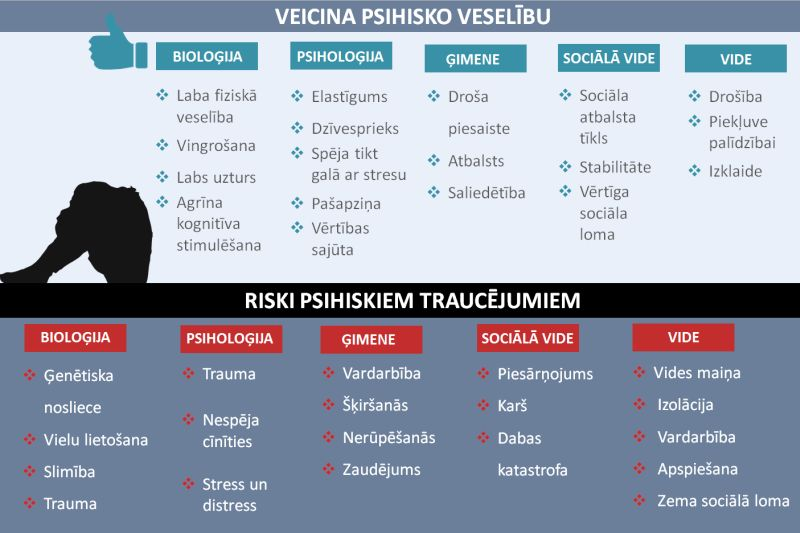

Garīga rakstura traucējumi ir psihiska saslimšana vai garīgās attīstības traucējumi, kas ierobežo cilvēka spējas strādāt un aprūpēt sevi, kā arī apgrūtina iekļaušanos sabiedrībā. Personām ar intelektuālās attīstības traucējumiem ir mācīšanās grūtības, un viņi attīstās lēnāk nekā pārējie cilvēki. Šis stāvoklis parasti tiek konstatēts piedzimstot vai agrā bērnībā. Reizēm tas radies smadzeņu bojājumu rezultātā, pēc pārciestām slimībām vai traumām.
Garīga rakstura traucējumu izpausmes un smaguma pakāpe var būt ļoti dažāda no viegliem mācīšanās traucējumiem līdz nopietniem attīstības traucējumiem, kas būtiski ietekmē cilvēka dzīvi. Daudziem cilvēkiem ar šiem traucējumiem ir nepieciešama ilgstoša medicīniska, psiholoģiska un sociāla palīdzība. Ir svarīgi uzsvērt, ka ar atbilstošu atbalstu un terapiju cilvēki ar garīga rakstura traucējumiem var veiksmīgi integrēties sabiedrībā.